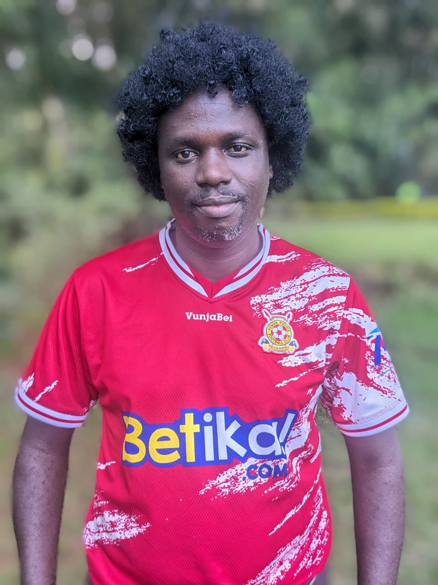

Gitau Wilson Njoroge

🔍 Experienced criminal investigator with over a decade of service in forensic investigation, criminal intelligence, and evidence analysis within the Directorate of Criminal Investigations (DCI). I combine meticulous crime scene management with strong analytical skills and courtroom presentation. Recently completed Emergency Medical Technician (EMT) training at Kenya Red Cross (2025) and continuously upgrading my expertise to strengthen emergency response and public safety. Passionate about community service and leveraging forensic science to uphold justice.
Dedicated to mentoring young officers and volunteering in community policing initiatives.
- Lead complex criminal investigations, prepare watertight case files and court exhibits.
- Forensic evidence collection, preservation, and analysis; fingerprint identification using national AFIS.
- Criminal intelligence analysis to dismantle networks; testify as expert witness in court.
- Mentor junior investigators on crime scene protocols and evidence handling.
- Maintained public order during national security operations; supported rapid deployment tasks.
- Assisted investigative teams with evidence handling and preliminary intelligence.
- Engaged in community policing, building trust between citizens and police.
Academic
Professional Training
Languages
English – Fluent (written & spoken)
Swahili – Fluent (native)
Interests
Phone: +254 727 345148
Email: wilsongitau100@gmail.com
Location: Nairobi, Kenya (also available for remote collaboration)
References: Available upon request.